Meatplus Foods · logo
Today’s shapes: “plus” on a circle and FOODS under “meat”, in five colour sets. Three ways to set FOODS, an “mp” circle mark, and two ways to show that Meatplus is part of Sealink.
The logo
Colours, side by side with Sealink
Five colour sets. 1 to 3 use green, orange and yellow. 4 and 5 use Sealink navy. Each row: smaller, regular and lighter FOODS on the brand colour, then regular on the Sealink canvas grey. Each one sits with “a Sealink company” and the Sealink logo.
The type from round 3: wide, heavy and loud.
1 · Deep green and amber
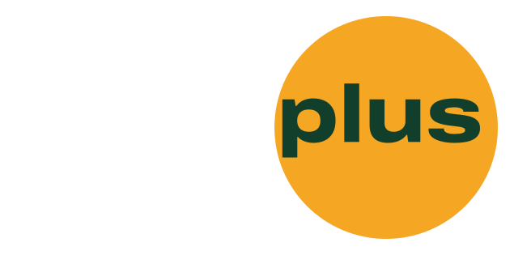
a Sealink company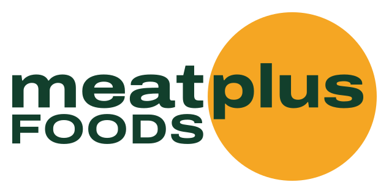
a Sealink company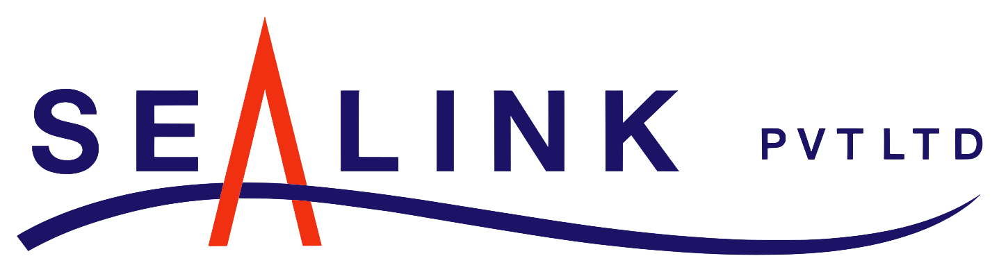
2 · Pine and yellow
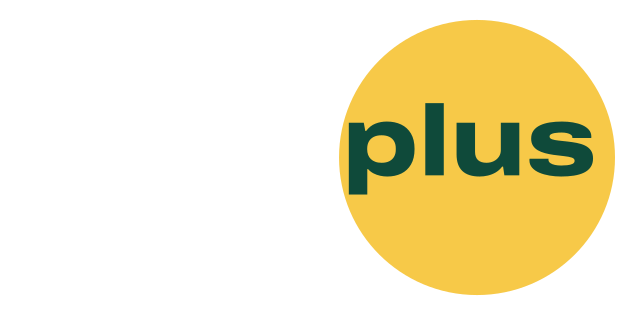
a Sealink company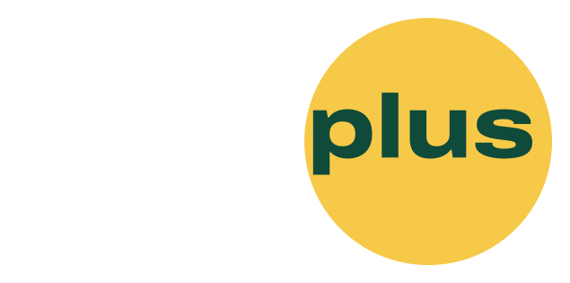
a Sealink company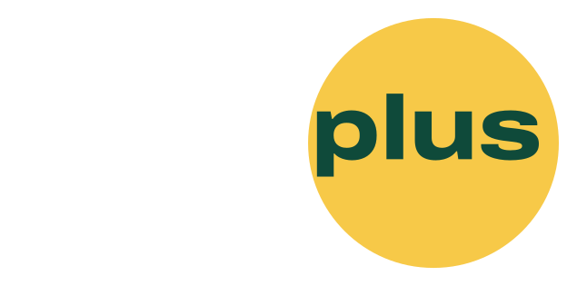
a Sealink company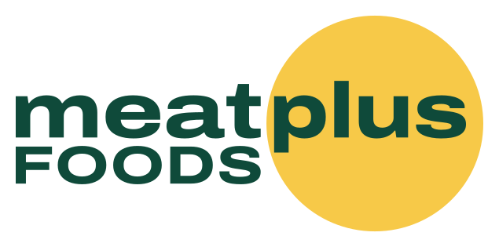
a Sealink company3 · Mid green, orange, yellow FOODS
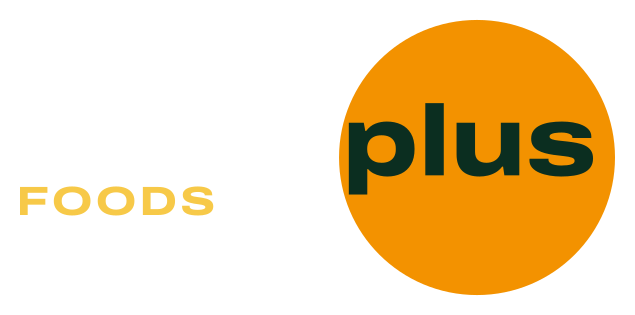
a Sealink company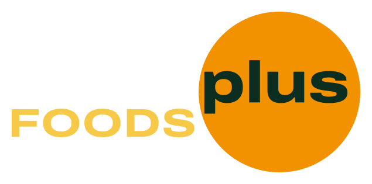
a Sealink company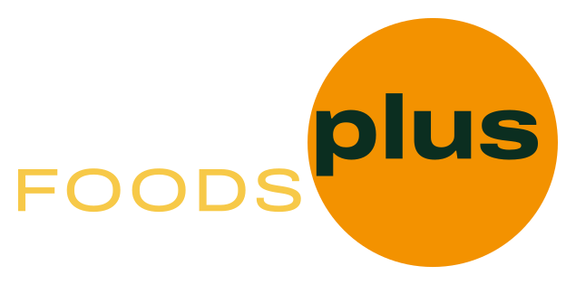
a Sealink company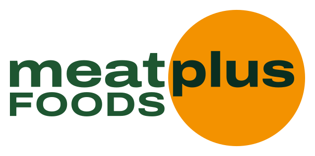
a Sealink company4 · Sealink navy and Sealink red
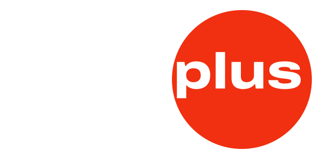
a Sealink company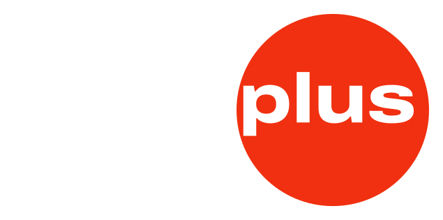
a Sealink company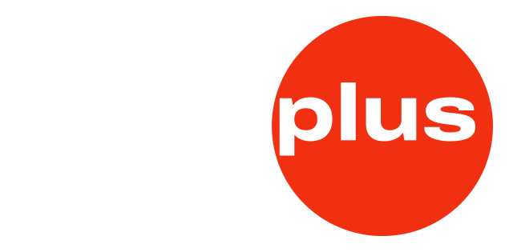
a Sealink company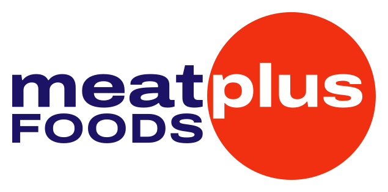
a Sealink company5 · Sealink navy and yellow
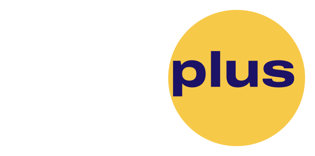
a Sealink company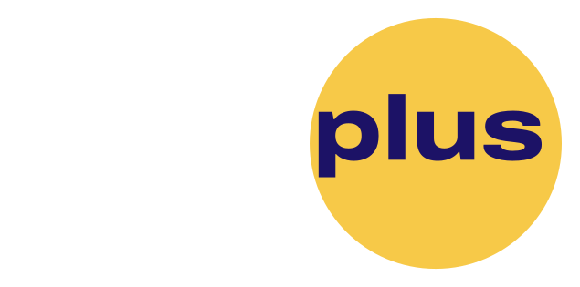
a Sealink company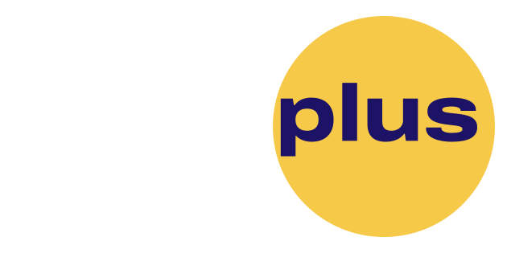
a Sealink company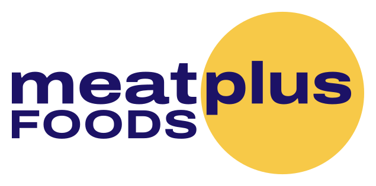
a Sealink companyCircle mark: “mp”, in each colour set
How Meatplus shows it is part of Sealink
A and B work together. A is for things people hold or walk past. B is for the website. Both use the regular FOODS logo here.
Link to Sealink
On signs, bags and packs: “a Sealink company”
Add “a Sealink company” with the small Sealink logo, set apart from the Meatplus logo. The Meatplus logo itself does not change.
Look at
- 1On the sign: a thin rule, then “a Sealink company” and the Sealink logo in white. Far smaller than the Meatplus logo.
- 2On the bag: “by Sealink” at the bottom, in Sealink’s own navy and red.
- 3On a Meatplus website: the same line in the footer.
Trade-off
Clear to any shopper who reads it, and Meatplus keeps its own look. It is small, so on a busy street it is a second read, not a first.
Link to Sealink
Online: inside Sealink, or its own site
Two ways online. Left: Meatplus is a page inside the Sealink site, under Sealink’s header (as in the Final look). Right: Meatplus has its own site and a top bar links back to Sealink.
Meatplus Foods outlets
Meatplus Foods is Sealink’s retail brand, with shops in Malé. Visit an outlet to buy for home.
Find your nearest Meatplus
[OUTLET 1 NAME] · [OUTLET 2 NAME]
Look at
- 1Sealink’s header and nav from the Final look. Meatplus is reached from it.
- 2The Meatplus logo is a small label above a navy heading. The page is Sealink’s, not Meatplus’s.
- 3On its own site, a thin bar on top says “Part of Sealink” and sends trade buyers to sealink.mv.
Trade-off
Inside Sealink is the strongest link, but online Meatplus takes Sealink’s navy look. Its own site keeps the green and orange, and the link is one line at the top.
Also kept
Kept from round 2
Four cuts
A different direction, kept to compare: a square mark made of four cuts beside the name.
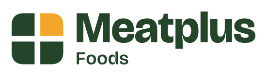
Shapes and colours are for review, not final artwork. Items in [brackets] are content to come from Sealink.